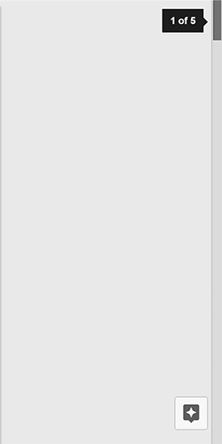
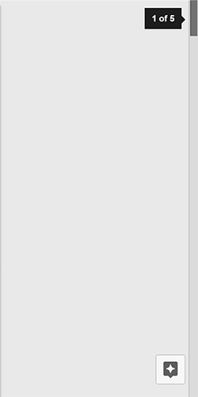

Typical Appearance
The scrollbar has one generally-accepted appearance: a tray on the right side of the computer screen in which a slightly off-colored block, known as the scroll thumb, rests. The shape and color of the tray and thumb vary across different platforms.

If there is content on the page that is not immediately visible from left to right, scrollbars will also appear on the bottom of a page in a horizontal position identical in appearance to its vertical counterpart. In the image below, the scrollbar native to the Google Documents app provides a horizontal scroll option upon resizing the window:

Typical Behavior
The action of scrolling up or down is universal. The user can move, or scroll, an entire page of content up or down by manipulating the scroll thumb (or one of the variants provided lower). Users can change the direction of their scroll in their settings - this will be discussed further in variants and platform-specific instances.
Across most devices, the scroll thumb will adjust in size to give the user an indication on the size of the document. This is a helpful form of feedback for the amount of content on any given page.

A possible complaint, however, resides in the event that a page has an inordinate amount of content; in this scenario, the scroll thumb becomes very small and difficult to manipulate for some users. Below, the sticky notes app native to Windows demonstrates the change in scrollbar size depending on text amount.

Events
An event is something that can happen to a user interface component. They are both conceptual and highly concrete in that events very frequently translate directly into a user interface component’s API.
Using the scrollbar component, the most relevant scrolling event is the click. A click event
indicates that the user has selected the scrollbar thumb. Secondary events include hover, indicating that a pointing device is explicitly within the bounds of the scrollbar thumb. In the event that the user clicks and holds a scrollbar, the release event is applicable.
The scrollbar will highlight during a hover event and then highlight brighter upon being clicked. This
provides a form of feedback that indicates scrollbar response upon additional activity performed.
 


State Diagram
Scrollbars share the following states because of their similar functionality. The drag and
instantaneous "scrolling" states can be viewed as enabled scrolling states, since they must be activated through user interaction. The initial state can also be referred to as dormant, meaning that the user has yet to interact with the scrollbar.
When a scrollbar is enabled, the two possible active states are:
dragging scroll: The user is "dragging" the page up or down, whether by directly manipulating the scroll thumb or by taking advantage of the two-finger scroll function of the trackpad.instantaneous scroll: The user "skips" across the page with keyboard functions (the up and down arrow keys, the space bar, page up and page down keys, etc.). The effect is an instantaneous jump, rather than a gradual pulling drag of a page.
Component in Action
Here we have an image of scrolling down a screen:

Variants
- Two Finger Scrolling
Two finger scrolling, originally introduced by Apple, is a new and more efficient way to scroll through pages on laptops. Although it is an easier tool to use, it is difficult to learn how it works because it is not intuitive. When users scroll down with two fingers on the trackpad, they expect the page to go down. Similarly, when they scroll up, they anticipate the page will move upwards. This intuition is formed by the way the scroll bar is designed. However, both OS X and Windows 10 introduce two finger scrolling in the opposite manner. This can make it harder and more frustrating for users to adjust to the change. On the other hand, once users are acclimated with this adjustment, it is easier to remember how it works, and they are less likely to forget how to use it; essentially, it becomes second nature. - Keyboard Controls
There are alternative ways to scrolling, two of which can be accessed on the keyboard. The arrow keys on the bottom, right-hand side of the keyboard can be used as shortcuts to scroll up and down a page; the down arrow key shifts the page downwards while the up key moves it upwards. In addition, users can utilize the spacebar to scroll down the page and the keyboard shortcut Shift+Space to scroll upwards. - Mouse Scroll Wheel
The computer mouse is an accessory that can either be used wirelessly or attached to desktops and laptops. The scroll wheel, located in the middle of the mouse, can act as another scrolling agent. The scroll wheel can be used in two ways; it can either be scrolled or clicked on. Users can manipulate the scroll wheel to scroll up and down a page depending on the settings of their devices. They can also click on the wheel and drag the pointer in the direction they want to travel on a page.

Priority Metrics
Talk about the five usability metrics in relation to this component. Not all components will have the same metric priorities. For example:
- Learnability
- Efficiency
- Memorability
- Errors
- Satisfaction
Because the button is such a fundamental part of virtually every user interface available today, it can be said that all usability metrics are equally important for this component. Users who are seeing a button in a given platform for the first time must not have any issues recognizing it and knowing what to do with it (learnability). The high priority of learnability also implies that memorability is a given.
Users must also never experience undue delays with using a button (efficiency), particularly because using a button almost always involves an instantaneous, immediate-result action. Users should almost never trigger a button by mistake (errors)—especially buttons whose actions result in significant changes to data or the real world.
If any metric at all can be considered as a “low priority” for buttons, it would be satisfaction. The button is such a utilitarian component that “fun” or “enjoyment” is hardly associated with its use. One exception to this prioritization may be for buttons in applications whose primary metric is satisfaction (e.g., games, entertainment). As a part of that overall system, making buttons “fun” may then become more important than in other situations.
Key Characteristics
This section is for describing “what makes for a good your component here?” Most likely, this is an amalgam of guidelines documents and platform-independent interaction design principles.
Feedback
Perhaps the most important interaction design principle that a button must follow is feedback. Users must never doubt whether:
- they did positively trigger a button (and thus its associated action)
- they successfully cancelled the triggering of a button, due to changing their minds midway through the action that triggers the button